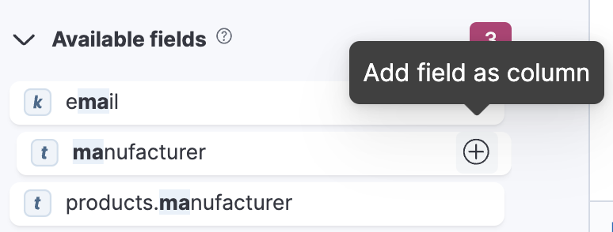
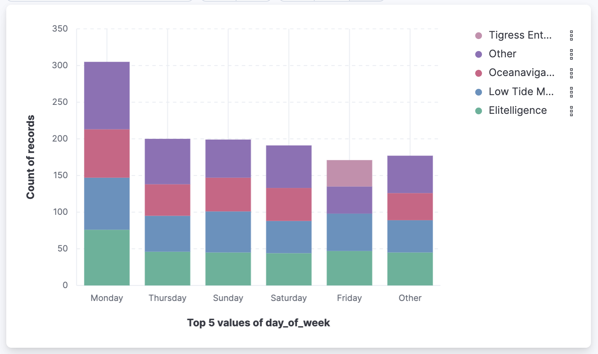

Explore fields and data with Discover
editLearn how to use Discover to:
- Select and filter your Elasticsearch data.
- Explore the fields and content of that data in depth.
- Present your findings in a visualization.
Prerequisites:
- If you don’t already have Kibana, start a free trial on Elastic Cloud.
- You must have data in Elasticsearch. Examples on this page use the ecommerce sample data set, but you can use your own data.
- You should have an understanding of Elasticsearch documents and indices and Kibana concepts.
Load data into Discover
editSelect the data you want to explore, and then specify the time range in which to view that data.
- Find Discover in the navigation menu or by using the global search field.
-
Select the data view that contains the data you want to explore.
Kibana requires a data view to access your Elasticsearch data. A data view can point to one or more indices, data streams, or index aliases. When adding data to Elasticsearch using one of the many integrations available, some data views are created automatically most of the time, but you can also create your own.
If you’re using sample data, data views are automatically created and are ready to use.
-
If needed, adjust the time range, for example by setting it to the Last 7 days.
The range selection is based on the default time field in your data. If you are using the sample data, this value was set when you added the data. If you are using your own data, and it does not have a time field, the range selection is not available.
Discover is populated with your data and you can view various areas with different information:
- All fields detected are listed in a dedicated panel.
- A chart allows you to visualize your data.
- A table that shows all the data matching your data view. By default, the table includes a column for the time field and a column that lists all other fields in the document. You can modify the document table to display your fields of interest.
You can later filter the data that shows in the chart and in the table by specifying a query and changing the time range.
Explore the fields in your data
editDiscover provides utilities designed to help you make sense of your data:
-
In the sidebar, check the available fields. It’s very common to have hundreds of fields. Use the search at the top of that sidebar to look for specific terms in the field names.
In this example, we’ve entered
main the search field to find themanufacturerfield.You can use wildcards in field searches. For example,
goe*destfindsgeo.destandgeo.src.dest. -
Select a field to view its most frequent values.
Discover shows the top 10 values and the number of records used to calculate those values.
-
Select the Plus icon to add fields to the results table. You can also drag them from the list into the table.
When you add fields to the table, the Summary column that was summarizing each result’s data is replaced.
- Arrange the view to your liking to display the fields and data you care most about using the various display options of Discover. For example, you can change the order and size of columns, expand the table to be in full screen or collapse the chart and the list of fields. Check Customize the Discover view.
- Save your changes to be able to open the same view later on and explore your data further.
Add a field to your data view
editWhat happens if you forgot to define an important value as a separate field? Or, what if you want to combine two fields and treat them as one? This is where runtime fields come into play. You can add a runtime field to your data view from inside of Discover, and then use that field for analysis and visualizations, the same way you do with other fields.
- In the sidebar, select Add a field.
- Select the Type of the new field.
- Name the field. Name it in a way that corresponds to the way other fields of the data view are named. You can set a custom label and description for the field to make it more recognizable in your data view.
-
Define the value that you want the field to show. By default, the field value is retrieved from the source data if it already contains a field with the same name. You can customize this with the following options:
- Set value: Define a script that will determine the value to show for the field. For more information on adding fields and Painless scripting language examples, refer to Explore your data with runtime fields.
- Set format: Set your preferred format for displaying the value. Changing the format can affect the value and prevent highlighting in Discover.
- In the advanced settings, you can adjust the field popularity to make it appear higher or lower in the fields list. By default, Discover orders fields from most selected to least selected.
- Save your new field.
You can now find it in the list of fields and add it to the table.
In the following example, we’re adding 2 fields: A simple "Hello world" field, and a second field that combines and transforms the customer_first_name and customer_last_name fields of the sample data into a single "customer" field. Options that are not mentioned are disabled:
Hello world field example:
-
Name:
hello -
Type:
Keyword - Set value: enabled
-
Script:
emit("Hello World!");
Customer field example:
-
Name:
customer -
Type:
Keyword - Set value: enabled
-
Script:
String str = doc['customer_first_name.keyword'].value; char ch1 = str.charAt(0); emit(doc['customer_last_name.keyword'].value + ", " + ch1);
Visualize aggregated fields
editIf a field can be aggregated, you can quickly visualize it in details by opening it in Lens from Discover. Lens is the default visualization editor in Kibana.
-
In the list of fields, find an aggregated field. For example, with the sample data, you can look for
day_of_week. -
In the popup, click Visualize.
Kibana creates a Lens visualization best suited for this field.
-
In Lens, from the Available fields list, drag and drop more fields to refine the visualization or create combinations. In this example, we’re adding the
manufacturer.keywordfield onto the workspace.
- Save the visualization if you’d like to add it to a dashboard or keep it in the Visualize library for later use.
For geo point fields ( ),
if you click Visualize,
your data appears in a map.
),
if you click Visualize,
your data appears in a map.
+
Compare documents
editYou can compare multiple results or documents in details.
- Select the entries you want to compare from the Documents or Results tab in Discover.
- In the Selected dropdown at the top of the table, choose Compare selected. The comparison view opens and shows the selected entries next to each other.
-
Compare the values of each field. By default The first entry selected shows as the reference for displaying differences in the other entries. When the value remains the same for a given field, it’s displayed in green. When the value differs, it’s displayed in red.
- Optionally, customize the Comparison settings to your liking. You can for example choose to not highlight the differences, to show them more granularly at the line, word, or character level, or even to hide fields where the value matches for all entries.
- Exit the comparison view at any time using the Exit comparison mode button.
Copy rows as text or JSON
editYou can quickly copy the content currently displayed in the table for one or several rows to your clipboard.
- Select the rows you want to copy.
- Open the Selected menu at the top of the table, and select Copy selection as text or Copy documents as JSON.
The content is copied to your clipboard in the selected format. Fields that are not currently added to the table are ignored.
Explore individual result or document details in depth
editDive into an individual document to view its fields and the documents that occurred before and after it.
-
In the document table, click the expand icon to show document details.
-
Scan through the fields and their values. You can filter the table in several ways:
- If you find a field of interest, hover your mouse over the Field or Value columns for filters and additional options.
- Use the search above the table to filter for specific fields or values, or filter by field type using the options to the right of the search field.
-
You can pin some fields by clicking the left column to keep them displayed even if you filter the table.
You can restrict the fields listed in the detailed view to just the fields that you explicitly added to the Discover table, using the Selected only toggle. In ES|QL mode, you also have an option to hide fields with null values.
- To create a view of the document that you can bookmark and share, select View single document.
- To view documents that occurred before or after the event you are looking at, select View surrounding documents.
Search and filter data
editDefault mode: Search and filter using KQL
editOne of the unique capabilities of Discover is the ability to combine free text search with filtering based on structured data. To search all fields, enter a simple string in the query bar.
To search particular fields and build more complex queries, use the Kibana Query language. As you type, KQL prompts you with the fields you can search and the operators you can use to build a structured query.
For example, search the ecommerce sample data for documents where the country matches US:
-
Enter
g, and then select geoip.country_iso_code. - Select : for equals some value and US, and then click the refresh button or press the Enter key.
-
For a more complex search, try:
geoip.country_iso_code : US and products.taxless_price >= 75
Whereas the query defines the set of documents you are interested in, filters enable you to zero in on subsets of those documents. You can filter results to include or exclude specific fields, filter for a value in a range, and more.
For example, exclude results from the ecommerce sample data view where day of week is not Wednesday:
- Click next to the query bar.
-
In the Add filter pop-up, set the field to day_of_week, the operator to is not, and the value to Wednesday.
- Click Add filter.
- Continue your exploration by adding more filters.
- To remove a filter, click the close icon (x) next to its name in the filter bar.
Search and filter using ES|QL
editYou can use Discover with the Elasticsearch Query Language, ES|QL. When using ES|QL, you don’t have to select a data view. It’s your query that determines the data to explore and display in Discover.
Learn more about how to use ES|QL queries in Using ES|QL.
Save your search for later use
editSave your search so you can use it later, generate a CSV report, or use it to create visualizations, dashboards, and Canvas workpads. Saving a search saves the query text, filters, and current view of Discover, including the columns selected in the document table, the sort order, and the data view.
- In the toolbar, click Save.
- Give your search a title.
- Optionally store tags and the time range with the search.
- Click Save.
Share your search
editTo share your search and Discover view with a larger audience, click Share in the toolbar. For detailed information about the sharing options, refer to Reporting.
Generate alerts
editFrom Discover, you can create a rule to periodically check when data goes above or below a certain threshold within a given time interval.
- Ensure that your data view, query, and filters fetch the data for which you want an alert.
-
In the toolbar, click Alerts > Create search threshold rule.
The Create rule form is pre-filled with the latest query sent to Elasticsearch.
- Configure your query and select a connector type.
- Click Save.
For more about this and other rules provided in alerting features, go to Alerting.
What’s next?
edit- Search for relevance.
- Configure the chart and document table to better meet your needs.
Troubleshooting
editThis section references common questions and issues encountered when using Discover. Also check the following blog post: Learn how to resolve common issues with Discover.
Some fields show as empty while they should not be, why is that?
This unexpected situation can happen with runtime fields and regular keyword fields when the string exceeds the value set for the ignore_above setting used when indexing the data into Elasticsearch.